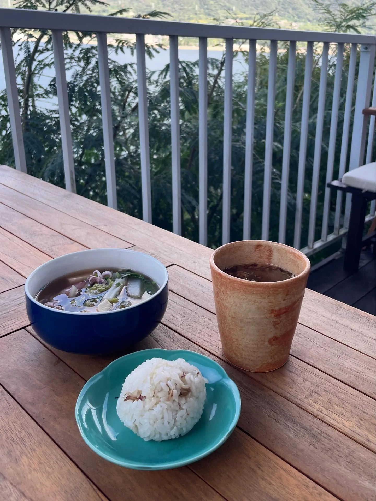
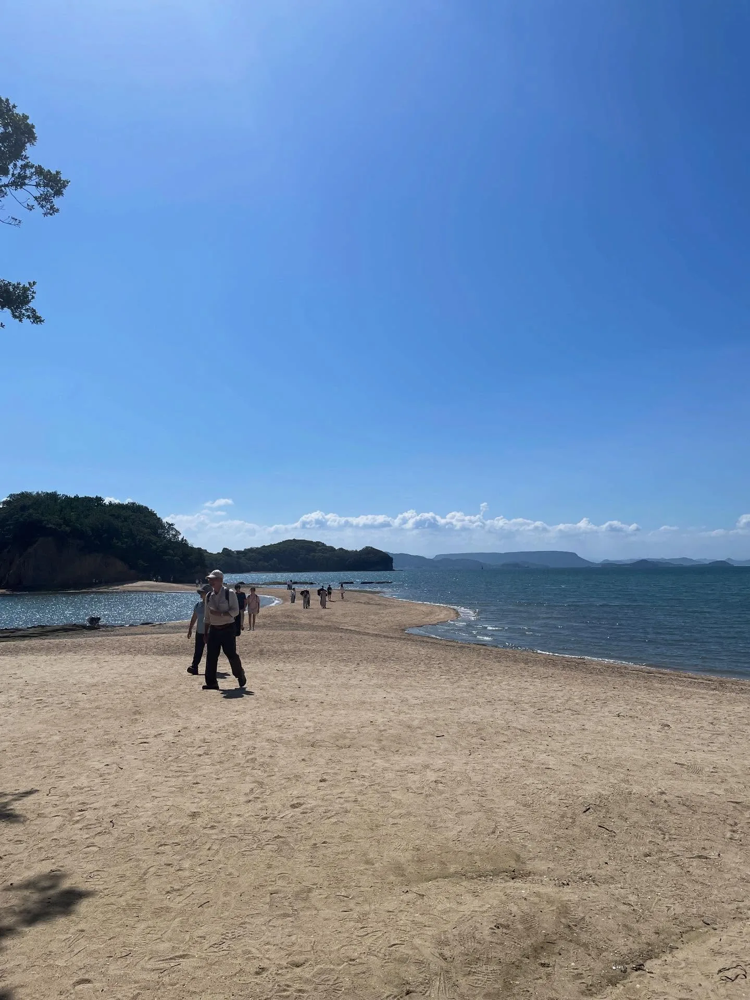
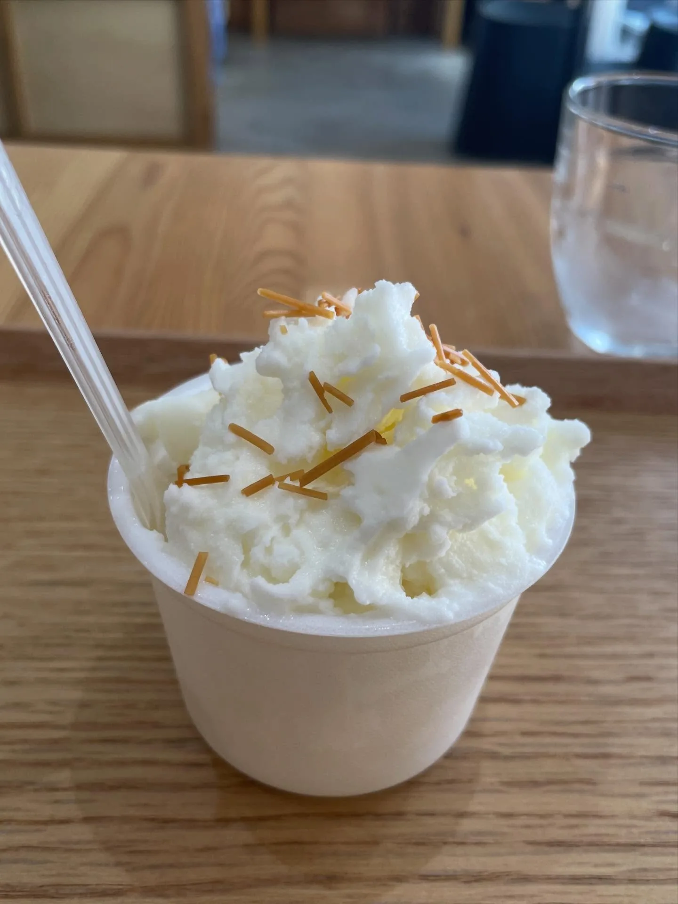

沒有藝術季的瀨戶內海小豆島
前往下一個換宿地點（姬路）以前，正好今年有久違的瀨戶內藝術季，於是順路去了小豆島旅遊。
我沒搭過渡輪，想試試看，本來打算從神戶搭乘，甚至考慮夜間航行省住宿費，可惜正好碰到渡輪維護的日子，於是改成從姬路港搭乘，3 小時前往。小豆島的公車班次不算多，加上還要轉車，11 點多從姬路搭船出發，抵達小豆島的住所時已經是下午 4、5 點。
Sen Guesthouse
選擇的住所是住家兼民宿，有廚房、有客廳、有陽台，布置得很溫馨，走一段路還有海邊吊床。宿舍房也只有 4 個床位，這幾天完全沒被室友吵到，過得非常恬靜舒適。
剛經歷完連續一週高密度的社交活動，做飯、隨意散步真的對我來說是最好的休息，每天為自己做早晚飯，甚至這幾天的外出旅遊，對我來說都還太 heavy。
最後一個傍晚，我認識了另一位民宿客人、名為 Hanna 的巴西女孩，一起泡泡腳、分享晚餐、告別小豆島；另外某天等公車的時候，還被退休搬來小豆島的老夫婦載了一程。謝謝一期一會可愛善良的人們。

備忘
- 約 4,000 日圓～／人
- 位置近二十四之瞳電影村，偏不容易抵達（不過可以請公車司機在民宿門口停車，已經很方便了）。前往屋子還要走一段約 2 層樓的階梯。
- 更新：這個夏天（2026 年）階梯居然裝了貨梯⋯！
- @senguesthouse
現在沒有藝術季欸
搞笑的是，直到抵達的晚上在規劃隔天要去哪裡玩，我才發現此時此刻根本不是藝術季期間。（瀨戶內藝術季分春、夏、秋三期，每一期之間都會有一段非展期。）雖然很烏龍，不過可以去的地方比想像中的多（雖然有些景點覺得很普通），甚至島上遠一點的地方我也沒去（我是真的好累）。
該去的觀光景點都有去，但最喜歡的還是小巷亂晃和發呆。
迷路のまち與天使之路
位於土庄町、在「土渕海峡」旁邊。作為鑽小巷子愛好者，我很喜歡！這個區域有一些藝術季的點（雖然我去的時候都沒開），以及不少餐廳、咖啡廳，適合在這邊用餐、休息。一路前往海邊景點「天使之路」時，路過西光寺也很喜歡（2026年5月，迎請了北港朝天宮的媽祖分靈哦！超酷！），可以從高處眺望城鎮與海。


二十四之瞳電影村、橄欖公園
二十四之瞳電影村：一個因拍攝電影而搭建、而後保留下來的村子，可以體驗到昭和初期的漁村氛圍。因為我已經去了不少鄉下地方、不同的建築設施，所以對我來說吸引力普通。
小豆島橄欖公園：適合拍照、採購各式伴手禮，八成遊客是（講台語的）台灣人 XD 是電影《魔女宅急便》真人版的拍攝場警，所以有一些可以合照的設施，也有(魔法)掃帚可以免費租借。

備忘
- 二十四之瞳電影村：8:30–17:00，1,000 日圓／人
- 小豆島橄欖公園：8:30–17:00
Yamaroku 木桶醬油
小豆島有關吃的，主要特產是橄欖油、素麵、醬油。軟冰淇淋的橄欖油口味、素麵口味、醬油口味我都吃到了，其中醬油是在「ヤマロク醤油」吃的：只是一般牛奶口味直接淋醬油＋黑豆，但意外適合，而且喜歡！還提供了一罐醬油自由使用。
他們是以傳統方式、用杉木做的巨大木桶釀造醬油，可以進去看一下、和木桶合照，也有簡單導覽，一切免費，也因而離開時會有「似乎得買一下醬油」的壓力（我就臉皮薄……），但還是覺得挺值得的，也覺得維持傳統真的很不容易。

備忘
- 9:00–17:00
- 距公車站徒步 20 分鐘，醬油產品 750 日圓起。日式屋子很大，可以吃個冰休息一下。
森國酒造
另外值得紀錄的是小豆島唯一一家酒造「森國酒造」。因為很想找個地方休息、又沒有什麼選擇而來（好隨便！），抵達時已是下午四點，只喝了一杯清酒和甜點，很可惜沒機會品嘗酒粕麵包和料理，不過空間氛圍不錯（再加上只有我一個客人……！），得到一個很棒的休息時間。
備忘
- 9:00–17:00，休週四；麵包店休週二、三、四
- 那個誰請代我品嚐他們家的麵包！！！
小結
總體而言，在小豆島度假的三四天，很 chill，溫馨的 hostel 帶給我很棒的第一印象。島上景點有很觀光的、也有很傳統的、也有自然的，每天從不同角度看見不一樣的海景，推推。（字彙量貧乏）
關鍵字香川瀨戶內海小豆島橄欖醬油Sen Guesthouse二十四之瞳電影村森國酒造Yamaroku醬油
留言
電子郵件不會公開，只用來辨識留言者。第一次留言會先經過審核，之後同一個電子郵件的留言會直接顯示。本留言區以 Cloudflare Turnstile 防止垃圾留言。